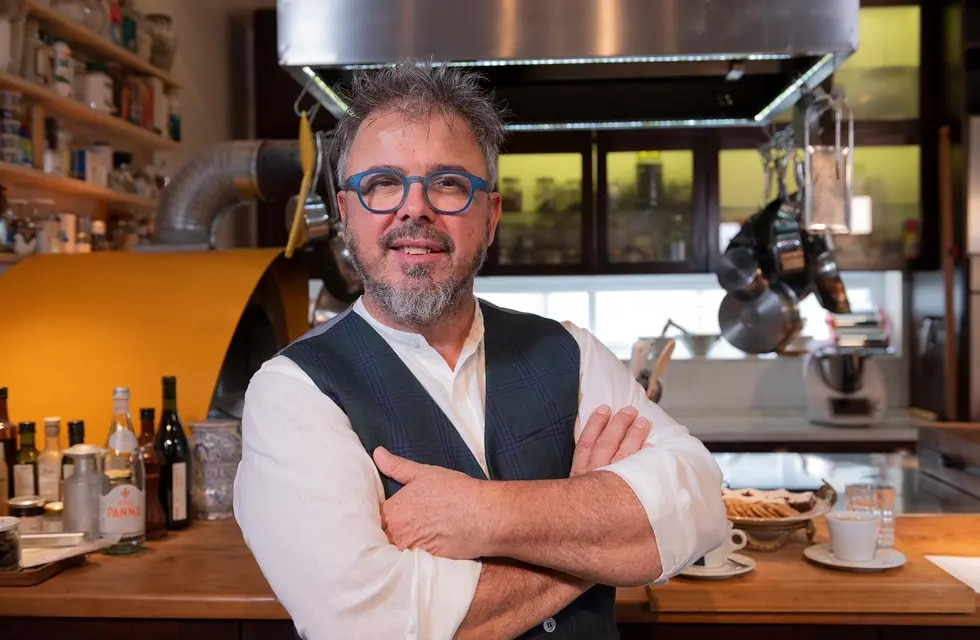
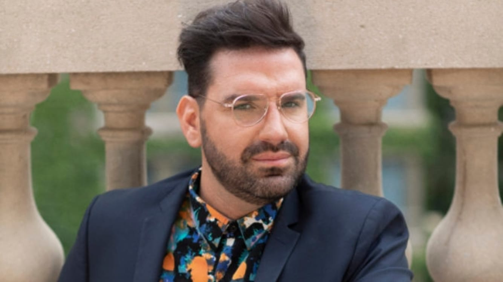
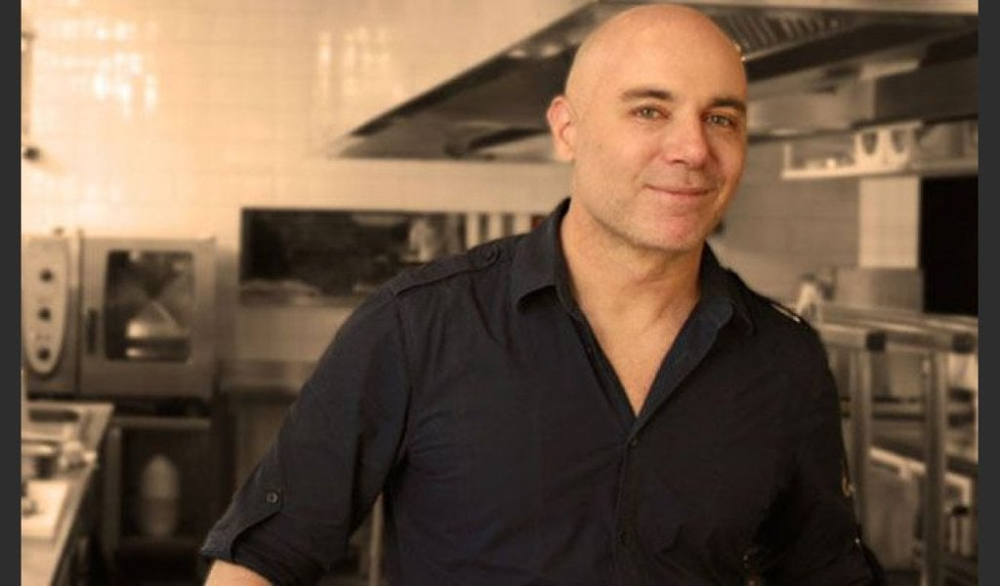
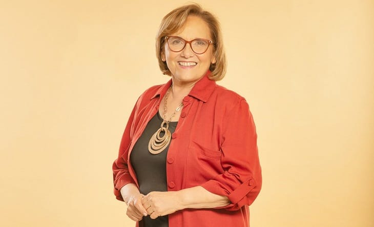

NARDA LEPES
NARDA LEPES (@nardalepes) nació en Buenos Aires en 1972. A los 20 años empezó a dedicarse a la cocina, en 1995 viajó a París para practicar en distintos restaurantes de la capital francesa donde trabajó con chefs del mundo. Conocida en la Argentina por sus programas en el canal de cable Utilísima, se hizo famosa por recrear recetas de Doña Petrona y fue una figura indiscutible en El Gourmet, donde intercaló sus recetas con sus viajes gastronómicos (ganó en este marco premios Martín Fierro). En 2011 fue mamá de Leia. En televisión también fue jurado del ciclo Dueños de la Cocina, emitido por Telefe, y de MasterChef Uruguay. También participó de El Gran Premio de la Cocina como jurado invitada. Fue directora creativa de la revista web de El Gourmet, además de realizar colaboraciones en la revista Viva de Clarín y desempeñarse como columnista en La Nación. Es autora de libros de cocina y en el año 2020 lanzó su aplicación Comé+Plantas para acercar a los usuarios a probar y conectar con la cocina a través de los vegetales. En su página web publica recetas para poder realizar en casa, mientras ofrece comidas listas, para hornear y elementos de almacén y despensa en @nardacomedor y @comedordiario.A su vez, es participante activamente de la ACELGA (Asociación de Cocineros y Empresarios Ligados a la Gastronomía Argentina) para “trabajar por la identidad de la cocina argentina y posicionar al país como un refere

DONATO DE SANTIS
DONATO DE SANTIS (@donatodesantis) nació en Milán, Italia. En el 2000 llegó a la Argentina para trabajar en cocina y dar clases en el Colegio de Cocineros del Gato Dumas hasta que en 2005 fundó su propio restaurante, Cucina Paradiso, especializado en la comida de sus orígenes. Antes de llegar a nuestro país, trabajó en restaurantes de Estados Unidos y hasta llegó a ser contratado para ser el chef del diseñador Versace en su mansión de Miami Beach. Ganó premios, editó libros y condujo programas de televisión en El Gourmet, Utilisima, El Trece y Telefe. Además, fue parte del jurado de distintos realities como Masterchef en 2014 y 2015, Dueños de la Cocina en 2016, y en el 2020 llegó a la pantalla a través de MasterChef en su edición de famosos

DAMIAN BETULAR
DAMIAN BETULAR (@dbetular) nació en Dolores en 1982. Es definido por muchos como "el mejor pastelero del país", además de ser un especialista en macarones, galleta tradicional de la pastelería francesa. Se recibió de Profesional Gastronómico y Pastelero Profesional en el Instituto Argentino de Gastronomía y viajó por el mundo para perfeccionarse. Es chef principal de uno de los hoteles más lujosos de la Ciudad Autónoma de Buenos Aires, el hotel Palacio Duhau Park Hyatt Buenos Aires, además de chef ejecutivo de pastelería de la Duhau Pâtisserie, aunque tiene una amplia carrera, se hizo mayormente conocido por haber sido jurado del realities emitidos por Telefe. En 2015 fue como cocinero invitado a MasterChef, productor de El Desafío de Buddy en Discovery Home and Healt, fue columnista en el programa radial de Marley Alejandro Wiebe y en 2018 y 2019 fue parte del jurado de Bake Off Argentina. El 2020 lo sorprendió juzgando a los participantes de la primera edición de MasterChef Celebrity Argentina.

GERMAN MARTEGUI
GERMÁN MARTITEGUI (@germanmartitegui) nació en 1966 en Necochea. Es el chef más temido de MasterChef Celebrity Argentina por sus críticos comentarios a los famosos que presentan sus platos, aunque sus amigos y colegas dicen que en "la vid real" es de lo más simpático. Durante su infancia experimentó mucho con la cocina. Es dueño del restaurante Tegui, catalogado como uno de los 25 mejores de todo Latinoamérica y otras voces lo sitúan dentro de los 100 mejores del mundo. Tiene una familia monoparental, ya que a través del método de subrogación de vientre tuvo a sus dos hijos Lorenzo y Lautaro, aunque eso es lo único que se sabe de su vida privada. Luego de estudiar Relaciones Internacionales y Comercio Exterior, trabajó junto a la cocinera Beatriz Chomnalez y más tarde fue jefe de cocina de Francis Mallman. Fundó algunos sitios de comida como Olsen y Casa Cruz, sin embargo ahora está dedicado plenamente al mencionado anteriormente Tegui. Participó de antiguas ediciones de MasterChef y MasterChef Junior de Argentina en 2014 y 2015, respectivamente. En el 2020 tomó un rol protagónico al ser el jurado más duro en MasterChef Celebrity Argentina, en donde se enfrentó duramente a Federico Bal y mostró una especie de favoritismo con Vicky Xipolitakis.

GUILLERMO CALABRESE
GUILLERMO CALABRESE (@calacocinero) nació en 1961 en Buenos Aires. Tiene muy presente todo el tiempo sus raíces italianas y lo muestra en su cocina. Fue presentador y conductor en el programa Cocineros Argentinos, donde realizaba platos junto a su equipo. Junto a Carlos “El Gato” Dumas, quien fue su maestro por mucho tiempo, fundó el Instituto de Gastronomía Gato Dumas, del cual es Director Académico General. Su cuenta de Instagram está llena de fotos de platos muy tentadores. En pandemia decidió además sumar videos con sus recetas. Es la cara de muchas marcas que lo contactan para realizar sorteos con sus seguidores. En ocasiones hace videos en vivo junto a otros cocineros para hablar de su pasiòn por la cocina. También tiene su canal de Youtube desde septiembre del 2020 donde sube recetas completas para hacer en casa.

MARU BOTANA
MARU BOTANA (@marubotanaok) nació en Belgrano en 1969. Es una de las cocineras argentinas más populares en gran parte debido a que protagonizó numerosos programas de televisión. Además de ejercer en la gastronomía se destaca por su perfil familiar: es mamá de 8 hijos, quienes la acompañan desde sus inicios en la pantalla chica. El primer programa que realizó, que fue “Todo dulce”, se transmitía por Utilísima mientras estaba embarazada de Agustín, el primero de sus descendientes. La fama de Maru llegó cuando condujo Maru a la tarde junto a Mariano Peluffo, donde andaba en patines por el estudio de Telefe, canal en el que tuvo muchas temporadas. Además, pasó por Canal Trece, América TV y El Gourmet. También colaboró en distintos programas de televisión como jurado al Gran Premio de la Cocina, emitido por Canal 13. Una de las producciones más famosas fue Sabor a mi cuando la cocinera estaba acompañada por Diego Perez y Sebastián Coco Carreño como su ayudante. Por otro lado, tiene su propia cadena de locales de dulce y salado que lleva su nombre. Actualmente tiene un canal de youtube y su cuenta personal de Instagram, en donde sube recetas y comparte material junto a su familia.
